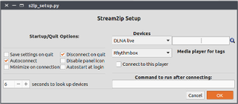
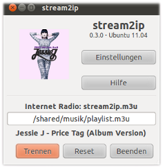

stream2ip
Dieser Artikel wurde für die folgenden Ubuntu-Versionen getestet:
Ubuntu 17.10 Artful Aardvark
Ubuntu 16.04 Xenial Xerus
Ubuntu 14.04 Trusty Tahr
Zum Verständnis dieses Artikels sind folgende Seiten hilfreich:
Stream2ip  ist eine grafische Benutzeroberfläche, um eine lokale Audio-Ausgabe als Netzwerk-Gerät im LAN/WLAN anzubieten. Nach erfolgreicher Installation kann man mit nur einem Mausklick eine Verbindung mit einem der unterstützten Verfahren herstellen:
ist eine grafische Benutzeroberfläche, um eine lokale Audio-Ausgabe als Netzwerk-Gerät im LAN/WLAN anzubieten. Nach erfolgreicher Installation kann man mit nur einem Mausklick eine Verbindung mit einem der unterstützten Verfahren herstellen:
Audioausgabe als Internetradio-Stream via Icecast2
Audio/Video-Datenübertragung mittels UPnP über uShare oder ReadyMedia
Einrichten eines DLNA-Renderers als Audio-Ausgabegerät über pulseaudio-dlna
PulseAudio-RAOP-Streams zu einer Apple AirPort Express® (AirTunes®)
PulseAudio-A2DP-Streams an Bluetooth-Geräte senden
Einrichten einer RTP/Multicast-Verbindung von PulseAudio
Das Programm liegt im Python-Quellcode vor und läuft nativ im Python-Interpreter. Eine Kompilierung ist deshalb nicht notwendig. Stream2ip kann somit unabhängig von der jeweiligen Architektur betrieben werden. Ab Version 1.0 läuft das Programm unter Python3. Für den Betrieb unter Python 2.x sollte man deshalb auf eine ältere Programmversion zurückgreifen.
Voraussetzungen¶
Stream2ip wurde unter den gängigen Desktop-Umgebungen GNOME, KDE, Xfce und LXDE getestet. Grundlage ist aber, dass die Geräte und die Streaming-Methode, über die die Audioausgabe erfolgen soll, sind korrekt eingerichtet und funktionsfähig sind. Es müssen nicht alle der unten näher aufgeführten Pakete installiert sein. Stream2ip überprüft, ob die jeweils notwendigen Pakete installiert sind und schlägt gegebenenfalls Pakete zur Nachinstallation vor. Ohne vollständig eingerichtetes PulseAudio sind aber nicht alle Optionen verfügbar.
Installation¶
Das Programm ist kein Bestandteil der offiziellen Paketquellen. Zur Installation muss man daher auf ein "Personal Package Archiv" (PPA) [1] ausweichen.
Adresszeile zum Hinzufügen des PPAs:
ppa:takkat-nebuk/takkat
Hinweis!
Zusätzliche Fremdquellen können das System gefährden.
Ein PPA unterstützt nicht zwangsläufig alle Ubuntu-Versionen. Weitere Informationen sind der  PPA-Beschreibung des Eigentümers/Teams takkat-nebuk zu entnehmen.
PPA-Beschreibung des Eigentümers/Teams takkat-nebuk zu entnehmen.
Damit Pakete aus dem PPA genutzt werden können, müssen die Paketquellen neu eingelesen werden.
Nach dem Aktualisieren der Paketquellen kann folgendes Paket installiert werden [2]:
stream2ip-gtk3 (ppa)
 mit apturl
mit apturl
Paketliste zum Kopieren:
sudo apt-get install stream2ip-gtk3
sudo aptitude install stream2ip-gtk3
Alternativ können DEB-Pakete von der Projektseite geladen werden [3]. Als dritte Variante kann man den Quellcode ins Homeverzeichnis entpacken und die Programmdatei stream2ip.py direkt von dort starten.
Einrichtung¶

Vor dem Betrieb muss man noch die vorhandenen Streaming-Methoden einrichten. Das Setup-Programm wird aus stream2ip gestartet oder kann auch separat ausgeführt werden (s2ip_setup.py). Dadurch können Einstellungen auch dann vorgenommen werden, wenn das Hauptprogramm nicht richtig startet oder eine automatische Verbindung unerwünscht ist. Ein Wechsel des Ausgabegerätes kann auch bei laufendem Audio-Player erfolgen.
Hinweis:
Abhängig von der jeweilige Streaming-Methode müssen zusätzliche Pakete installiert werden. Diese können auch mit dem Setup-Programm installiert werden.
Das jeweilige Gerät wählt man aus der Auswahlliste aus und gibt die passende Einstellung (z.B. IP-Adresse bzw. MAC der Netzwerkkarte oder einen Pfad) ein. Diese Einstellungen werden mit "Ok" gespeichert. Das zuletzt eingestellte Gerät wird beim Start von stream2ip standardmäßig geladen.
| Start/Ende-Optionen | |
| "Save settings on quit" | Geänderte Einstellungen werden beim Programmende gesichert |
| "Autoconnect" | Beim Programmstart wird automatisch mit dem zuletzt eingerichteten Gerät verbunden |
| "Minimize on connection" | Bei erfolgreicher Verbindung wird das Programm automatisch minimiert |
| "Disconnect on quit" | Eine Verbindung wird beim Programmende wieder getrennt |
| "Disable panel icon" | Das Statussymbol wird nicht angezeigt |
| "Autostart at login" | Stream2ip wird zu den Startprogrammen hinzugefügt |
| "Seconds to look up device" | Zeit (Sekunden) zur Geräteüberprüfung und Metatag-Aktualisierung (0 für keine) |
| "Media Player for tags" | Auswahl eines unterstützten Audio-Players für Metatag-Informationen |
| Geräte und Einstellungen | ||
| Gerät | Formatbeispiel | Anmerkungen |
| "AirPort Express" | 192.168.178.28:5000 | IP:Port der AEX. Nach dem Einschalten benötigt die AEX etwa 1 Minute, bis ihre IP im Netz sichtbar wird. Die Audioausgabe erfolgt mit einer Verzögerung von 3 bis 6 Sekunden. Näheres siehe auch in PulseAudio/AirTunes. |
| "Bluetooth" | "Auto" | Ein Bluetooth-Audiogerät wird automatisch erkannt. Soll nur ein bestimmtes Gerät erkannt werden, gibt man hier die MAC ein. Das Bluetooth-Protokoll muss man zuerst in PulseAudio korrekt installieren. Wird ein Suchintervall größer 0 eingegeben, wird die Verbindung automatisch hergestellt, sobald das Gerät eingeschaltet wird. |
| "UPnP-Gerät" | "/home/<user>/musik/" | Pfad zum über UPnP freigegebenen Verzeichnis. Es wird dabei auf uShare zurückgegriffen, das eine Vielzahl von Medienformaten übertragen kann. Mehrere Verzeichnispfade werden durch ein Leerzeichen getrennt. |
| "DLNA live" | Wohnzimmer @192.168.178.50 | Ein DLNA-Renderer wie pulseaudio-dlna kann im Setup-Programm gesucht werden. Alternativ kann man auch die URL des Renderers eingeben. Wird ein Suchintervall größer 0 eingegeben, wird die Verbindung automatisch hergestellt, sobald das Gerät eingeschaltet wird. |
| "RTP/Multicast" | - | PulseAudio RTP/Multicast-streaming Modul wird eingeschaltet. Auf dem Zielrechner muss der "Multicast/RTP-Empfänger" mit paprefs aktiviert werden. |
| "Internet Radio" | "live" | Ein eingerichteter Icecast2-Server kann über stream2ip zum Live-Streaming der Audioausgabe an das Intra- bzw. Internet eingerichtet werden. Bei Eingabe von "live" oder "local" wird Darkice gestartet. Alternativ kann man hier auch den Pfad zu Konfigurationsdateien für Ices oder Ices2 eingeben. Am Empfänger wird http://serverIP:8000/stream2ip.mp3 eingegeben. |
| "None" | - | Es ist noch keine Streaming-Methode ausgewählt. |
| "Nach erfolgreicher Verbindung starten:" | "Befehl" | Systembefehl, Skript oder Programm, das nach einer erfolgreichen Verbindung aufgerufen werden soll. Hier kann man zum Beispiel einen Musik-Player starten. |
Manuelles Starten des Setup-Programms¶
Falls fehlerhafte Einstellungen den Start von stream2ip behindern, kann man stream2ip mit der Kommandozeilenoption -s starten, um direkt im Setup-Programm zu landen. Wenn das Programm über das DEB-Paket installiert wurde, kann man das Programm direkt im Terminal [4] aufrufen:
stream2ip -s
Betrieb¶
 Das Programm kann bei Ubuntu-Varianten mit einem Anwendungsmenü über den Eintrag "Unterhaltungsmedien -> stream2ip" gestartet werden. Beim ersten Programmstart bietet das Programm nur die Betriebsart "None" an. Erst wenn im Setup-Programm die gewünschte Streaming-Methode richtig eingerichtet wurde, kann eine Verbindung hergestellt werden. Das Datenfeld kann während des Betriebs auch ohne Setup-Programm geändert werden. Die geänderten Daten werden beim Programmende in der Konfigurationsdatei gesichert und beim nächsten Programmstart automatisch geladen.
Achtung!
Das Programm überprüft nicht, ob unter der angegebenen IP/MAC auch ein für die Audio-Ausgabe geeignetes Gerät erreicht wurde. Bitte deshalb die Eingaben sorgfältig überprüfen.
Sobald das Programm ein betriebsbereites Gerät findet, wird das Audio-Gerät zur Ausgabe ausgewählt, bzw. eine Dateifreigabe über UPnP zum angegeben Pfad eingerichtet. Der Audioausgabe sollte jetzt nichts mehr im Weg stehen. Das Programm wird in die Bedienleiste minimiert und im Benachrichtigungsfeld leuchtet ein Statussymbol. In der Statuszeile des Programmfensters wird ein eventuell geladenes Modul angezeigt.
Falls eine automatische Verbindung mit dem lokalen Ausgabegerät nicht hergestellt wird, muss eventuell noch in der Datei /etc/pulse/default.pa die folgende Zeile abgeändert werden (nicht nötig für Internet Radio oder UPnP):
load-module module-stream-restore restore_device=false
Mit  auf das Statussymbol kann man das Programmfenster öffnen und man hat die Möglichkeit, die Verbindung zu "Trennen" oder den PulseAudio-Server mit "Reset" zurückzusetzen, falls die Verbindung aus irgendwelchen Gründen nicht stabil ist. Beim "Beenden" des Programms wird in der Standardeinstellung automatisch die Verbindung getrennt und wieder die Standard-Audioausgabe eingestellt. Beim Klick auf "Einstellungen" lädt das Setup Programm. Mit "Hilfe" wird eine englischsprachige Dokumentation im Internet-Browser geöffnet.
auf das Statussymbol kann man das Programmfenster öffnen und man hat die Möglichkeit, die Verbindung zu "Trennen" oder den PulseAudio-Server mit "Reset" zurückzusetzen, falls die Verbindung aus irgendwelchen Gründen nicht stabil ist. Beim "Beenden" des Programms wird in der Standardeinstellung automatisch die Verbindung getrennt und wieder die Standard-Audioausgabe eingestellt. Beim Klick auf "Einstellungen" lädt das Setup Programm. Mit "Hilfe" wird eine englischsprachige Dokumentation im Internet-Browser geöffnet.
Problembehebung¶
Upgrade von Version 0.x.x auf 1.0.x¶
Nach dem Upgrade ist das Verzeichnis für die Konfigurationsdateien nicht mehr unter ~/.stream2ip, sondern unter ~/.config/stream2ip zu finden. Alle Konfigurationsdateien müssen nach dort kopiert werden, wenn die alten Einstellungen erhalten bleiben sollen.
Einschränkungen¶
Stream2ip überprüft nicht, ob das eingerichtete Gerät auch ein gültiges Ausgabegerät ist.
- Erstellt mit Inyoka
-
 2004 – 2017 ubuntuusers.de • Einige Rechte vorbehalten
2004 – 2017 ubuntuusers.de • Einige Rechte vorbehalten
Lizenz • Kontakt • Datenschutz • Impressum • Serverstatus -
Serverhousing gespendet von